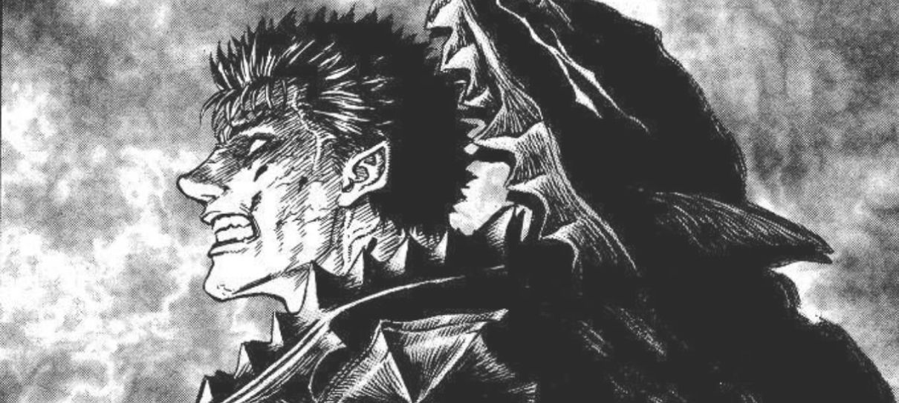

Berserk é um mangá japonês escrito e ilustrado por Kentaro Miura. Ele começou a ser publicado em 1989 e rapidamente se tornou um dos mangás mais influentes e aclamados de todos os tempos, especialmente no gênero dark fantasy.


A história segue Guts, um guerreiro solitário que empunha uma espada gigantesca e enfrenta demônios, cavaleiros e mercenários em um mundo brutal e sombrio. Ele busca vingança contra Griffith, seu antigo companheiro e líder do grupo mercenário Bando do Falcão, que sacrificou seus aliados para ascender a um nível divino.
O mangá é conhecido por sua violência extrema, personagens complexos e uma narrativa profunda que explora temas como:
Você pode ler Berserk oficialmente através de serviços licenciados que oferecem o mangá de forma legal. Aqui estão algumas opções: